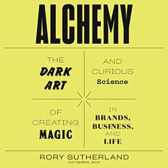
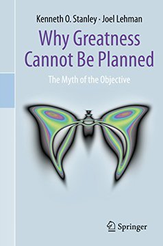

Módulo 04 / Apartado 4 de 5
Creatividad, y por qué no se ha muerto
Los tres tipos de Boden, las cuatro fases de Wallas, los nueve puntos con su moraleja matizada, la lógica psicológica de Sutherland y qué le pasa a todo esto cuando llega una máquina que produce ideas a peso.
Primero, dejar de usar la palabra como si fuera una sola cosa
«Creatividad» se usa para tres o cuatro cosas distintas, y ese es el motivo de que las conversaciones sobre creatividad no lleguen nunca a ninguna parte. Antes de nada, una definición operativa que no es mía ni suya, es la estándar en la literatura:
Algo es creativo si es (a) nuevo y (b) valioso. Las dos cosas. Nuevo y sin valor es una ocurrencia. Valioso y no nuevo es competencia, que está muy bien pero es otra cosa. Toda la dificultad de este apartado está en que la (a) es fácil de producir y la (b) es la que decide.
En el módulo 1 ya vimos que esto no va de tener una idea feliz, y en el módulo 2 pasamos por De Bono y el pensamiento lateral. Aquí toca la parte que faltaba: cómo funciona el mecanismo por dentro, y qué se puede entrenar de él.
Boden: los tres tipos, y son distintos de verdad
Margaret Boden (n. 1936) es investigadora de ciencia cognitiva e inteligencia artificial en la Universidad de Sussex, y su libro The Creative Mind (1990) es la clasificación más útil que existe. Recuenco la nombra como uno de los divulgadores que le inflamaron las ganas de saber cómo funcionaba esto.
Su primera distinción ya vale el viaje. Llama P-creatividad (psicológica) a lo que es nuevo para ti, y H-creatividad (histórica) a lo que es nuevo para todo el mundo. Reinventar el cálculo integral en tu habitación es P-creativo y no aparece en ningún libro de historia, pero psicológicamente es el mismo proceso que el de Newton. Lo que se entrena es la P; la H es la P con suerte y contexto.
Y luego están los tres tipos, que es lo que hay que memorizar. Se entienden con una metáfora que usa ella: el espacio conceptual, que es el conjunto de todo lo que se puede hacer siguiendo las reglas de un dominio.
Para lo que nos ocupa, la clasificación sirve de diagnóstico: cuando alguien pide «creatividad» en una reunión, casi siempre está pidiendo la 1 y a veces la 2, y casi nunca aceptaría la 3 si se la trajeras. Porque la 3, vista desde dentro del espacio viejo, no parece brillante: parece que no has entendido las reglas.
Wallas: las cuatro fases, y qué hacer en cada una
Graham Wallas, cofundador de la London School of Economics, publicó en 1926 The Art of Thought, donde describió el proceso creativo en cuatro fases. Es de hace un siglo, se ha matizado mil veces y sigue siendo la mejor descripción operativa que hay.
Los nueve puntos, y una advertencia sobre la moraleja
El acertijo más famoso de la literatura de creatividad es el de los nueve puntos: une los nueve con cuatro líneas rectas sin levantar el lápiz. Es de donde sale la expresión think outside the box, pensar fuera de la caja, literalmente: la solución exige salirse del cuadrado que forman los puntos, y casi nadie se lo permite porque nadie ha dicho que no se pueda.
Ese matiz es importante y casi nunca se cuenta. En 1981 Weisberg y Alba comprobaron que dar la pista explícitamente apenas mejoraba los resultados. Conclusión que sirve para todo el módulo: el bloqueo no está en no saber que hay que salir, está en no tener a mano la operación concreta con la que se sale. Las técnicas del módulo 2 y las metodologías del 5 son eso: operaciones concretas.
Sutherland: resolver el problema que la gente tiene de verdad
Rory Sutherland es vicepresidente de Ogilvy en el Reino Unido y probablemente el publicista vivo más citado en contextos de resolución de problemas. Su libro Alchemy defiende una idea sencilla y bastante subversiva: casi todos los problemas se plantean en términos de ingeniería y economía porque son los que se miden, cuando muchos son problemas de percepción.
Planteamiento de ingeniería: el trayecto Londres-París se hace largo. Solución: miles de millones de libras en vía nueva para recortar unos cuarenta minutos. Es la solución correcta al problema medido.
Contrapropuesta de Sutherland, mitad en broma y mitad no: por una fracción de ese dinero, poner a bordo a los mejores modelos del mundo sirviendo Château Pétrus gratis. Los pasajeros pedirían que el tren fuera más despacio.
La broma esconde el argumento entero: el problema no era la duración, era la calidad del rato. Nadie lo formuló así porque la duración se mide en minutos y el rato no se mide en nada. Que es, otra vez, la falacia de McNamara del módulo 3 vestida de proyecto de infraestructuras.

El libro de esto Alchemy: The Dark Art and Curious Science of Creating Magic in Brands, Business and LifeEl manual de la lógica psicológica frente a la lógica económica. Su tesis operativa: lo contrario de una buena idea puede ser otra buena idea, porque si algo funciona por razones lógicas ya lo estará haciendo tu competencia. Está lleno de casos y escrito para que te rías, lo cual esconde que es bastante riguroso — Rory Sutherland · 2019
Y ahora la IA, que es la turra
La turra de creatividad es de febrero de 2023, con las IAs generativas recién salidas del horno y todo el mundo anunciando la muerte de la creatividad. Su respuesta es terca y ha envejecido bastante bien.
El argumento central lo toma prestado de Scott Adams, el de Dilbert: las dinámicas cognitivas son dinámicas de mercado. Una sobreoferta de algo lo devalúa. Pasó con la publicidad nativa, que empezó colando y hoy nadie ve. Pasó con la publicidad «personalizada» de Facebook, que según él nunca llegó a cruzar el creepy valley.
El uncanny valley —valle inquietante— es un concepto que viene de la robótica (Masahiro Mori, 1970): a medida que algo artificial se parece más a un humano, nos cae mejor... hasta un punto en el que se parece casi del todo, y entonces produce repelús. Un muñeco es simpático; un muñeco hiperrealista da grima.
Trasladado a la publicidad y al contenido: un anuncio que sabe demasiado de ti no resulta útil, resulta inquietante. Y una vez cruzas esa línea, la gente aprende a ignorarte y ya no vuelve.
Y la frase que sostiene toda la turra, que es tan poco académica como precisa:
La gente que se preocupa por cómo la IA va a arrasar todos los procesos creativos no es consciente de que es incapaz de generar sabor por ahora. Puede copiar sabores, y por ende por pura fuerza bruta es capaz de llegar a resultados sorprendentes, pero todavía no sabe imitar el proceso creativo arborescente pseudofractal característico humano.
«Proceso arborescente pseudofractal» suena a pedantería y describe una cosa concreta: que una idea humana no se produce eligiendo la continuación más probable, sino ramificando en varias direcciones a la vez, abandonando ramas, volviendo atrás y saltando entre niveles. Es exactamente lo del apartado anterior —los cinco agujeros de conejo y las conexiones raras— y es lo que la fuerza bruta imita por fuera y no por dentro.
Su predicción práctica, que es la parte accionable: el trabajo mediocre y sin sabor es el que está en peligro, y aparecerán mercados pequeños de cosas hechas con personalidad aunque sean peores objetivamente. «Se venderán pequeñas tiradas de coches feos y con aerodinámica discutible». Y remata: si vas a ser creativo, más te vale ser optimista, que es una idea que le toma prestada a David Deutsch.
Enlace con lo anterior. Fíjate en que la IA generativa es una máquina combinatoria y exploratoria extraordinaria —los tipos 1 y 2 de Boden— y que la discusión interesante es si puede ser transformacional, el tipo 3, que consiste precisamente en romper la regla que define el espacio en el que fue entrenada. Con el vocabulario de Boden la pregunta se plantea bien; sin él, es una pelea de titulares.
Y el sistema que lo impide: el tonto del success story
Todo lo anterior va de cómo aparece una idea nueva dentro de una cabeza. Falta la otra mitad: qué hacen las organizaciones para que no llegue a ningún sitio. Recuenco le dedicó un hilo entero en marzo de 2026 y le puso nombre sobre la marcha, en el CPS Live.
Para conseguir credibilidad, financiación o adopción, cualquier iniciativa nueva tiene que presentar un caso de éxito previo: tracción, métricas, referencias.
Y las innovaciones que de verdad cambian algo son, por definición, imposibles de validar con casos de éxito previos. Si lo hubiera, no sería nuevo.
Su resumen: «el mercado pide pruebas de que ya corriste… antes de que empieces a correr». Y el «tonto» del título no es el que pide el caso: es la víctima de un proceso de ilusión de control disfrazado de gestión rigurosa.
Contra eso pone tres cosas, y las tres merecen conocerse.
- La Reina Roja
- De Leigh Van Valen, biólogo evolutivo, tomando la frase de Alicia a través del espejo: aquí tienes que correr todo lo que puedas para quedarte en el mismo sitio. Llevado al negocio: la ventaja competitiva siempre es temporal. Pero —y aquí está el giro— la innovación que la Reina Roja exige no puede ser la que ya tiene casos de éxito, porque esa ya la están copiando todos.
- El efecto Mateo
- Exigir prueba social crea un filtro que favorece a quien ya tiene éxito y castiga a quien intenta lo inédito. Al que tiene, se le dará. No es maldad de nadie: es lo que produce el criterio.
- Los hermanos Wright
- 1903. Nadie había volado con control un aparato más pesado que el aire, así que no existía ningún caso de éxito. Dos mecánicos de bicicletas sin títulos ni financiación pública. Sus competidores —Santos-Dumont, Langley— tenían más recursos y fracasaron porque perseguían un objetivo fijo. Ellos llegaron por iteración y por atender a hallazgos laterales, como el control de alabeo torciendo el ala. Hoy no pasarían la primera ronda de inversión por falta de tracción.

El libro de esto Why Greatness Cannot Be PlannedDos investigadores de inteligencia artificial comparan algoritmos que buscan novedad con algoritmos que buscan un objetivo, y encuentran que perseguir una meta lejana produce lo que llaman engaño objetivo: el camino hacia la meta pasa por sitios que parecen alejarte de ella, así que optimizar te aparta. La grandeza aparece siguiendo piedras sueltas que parecen irrelevantes — Kenneth Stanley y Joel Lehman · 2015
Y de ahí sale la conclusión que más molesta: los OKR, los planes a cinco años y los north stars que tanto quiere el management moderno son, según esta tesis, antídotos contra la grandeza. No porque estén mal hechos, sino porque optimizar hacia una métrica concreta apaga la exploración, que es de donde salen las cosas que importan.
Y el libro incómodo The Management MythUn exconsultor de estrategia con formación en filosofía desmonta el edificio entero: taylorismo, MBA, consultoras y libros de gestión. Su tesis es que no hay replicabilidad ni leyes universales, hay narrativa — casos de éxito construidos hacia atrás y vendidos como método. Y que ese aparato necesita casos de éxito para legitimarse, así que los fabrica — Matthew Stewart · 2009
Lo accionable, que él enumera. Medir «interesante» en lugar de «avance hacia el objetivo». Crear espacios protegidos de exploración sin métricas. Y cambiar el vocabulario: donde pone «hoja de ruta», poner piedras sueltas; donde pone «indicador», poner curiosidad cuantificada. Y sobre todo aceptar en voz alta que la falta de un caso de éxito previo no es un riesgo: es la señal de que estás haciendo algo que vale la pena.
Fíjate en que esto es la creatividad transformacional de Boden —la que rompe la regla que definía el espacio— vista desde el lado de quien tiene que aprobar el presupuesto. Desde dentro del espacio viejo no parece brillante; parece que no traes números.
Fuentes de este apartado
Las turras de las que sale
Posterior al corte del Turrero Post, así que solo está en su cuenta. Salió de una presentación improvisada en el CPS Live 2026 y desarrolla la contradicción entre exigir casos de éxito previos y querer innovación real, cruzando la Reina Roja de Van Valen, los hermanos Wright, Why Greatness Cannot Be Planned y The Management Myth. Cierra diciendo que la disrupción nunca se escribió con planes de negocio.
La creatividad y cómo las noticias sobre su propia muerte han sido exageradasTurra · 46 tweets · feb 2023La turra de este apartado, escrita con las generativas recién llegadas. Cuenta su propia relación con la creatividad —«curiosidad abrasiva + creatividad desaforada»—, nombra a De Bono y a Boden como sus primeras lecturas, y monta el argumento del creepy valley, la sobreoferta cognitiva y el sabor. Es también donde dice que la creatividad es piedra angular de toda su metodología CPS.
El umbral entre la complejidad y la serendipiaTurra · 45 tweets · nov 2022Complemento por el lado del azar. La creatividad y la serendipia se confunden constantemente, y esta turra separa las dos: la serendipia no se provoca, pero sí se puede construir el entorno que la hace más probable. Se usó ya en el módulo 1 y aquí se relee con las cuatro fases de Wallas en la mano.
Los libros
El más divertido de todo el temario y uno de los más útiles. Va de resolver el problema psicológico en lugar del problema medido, con el Eurostar, los botones de cerrar puertas de los ascensores que no hacen nada y medio centenar de casos más. Si el módulo 3 te dejó con la falacia de McNamara en la cabeza, este es su antídoto operativo.
 Aha! InsightMartin Gardner · 1978
Aha! InsightMartin Gardner · 1978Colección de problemas cuya solución exige un cambio de marco, con las ilustraciones originales. Es del divulgador matemático más importante del siglo XX y sirve como gimnasio: cada problema es un caso de tipo 3 de Boden en miniatura, y la sensación de ajá es exactamente la fase 3 de Wallas puesta en un tarro.
 El pensamiento lateralEdward de Bono · 1967
El pensamiento lateralEdward de Bono · 1967Se dio entero en el módulo 2, y se anota aquí porque es la otra mitad de este apartado: Boden explica de qué tipos hay, Wallas cuándo pasan y De Bono da las operaciones concretas para forzarlo. Recuenco lo cita como una de sus primeras lecturas sobre el tema y lo mantiene en su panteón particular.